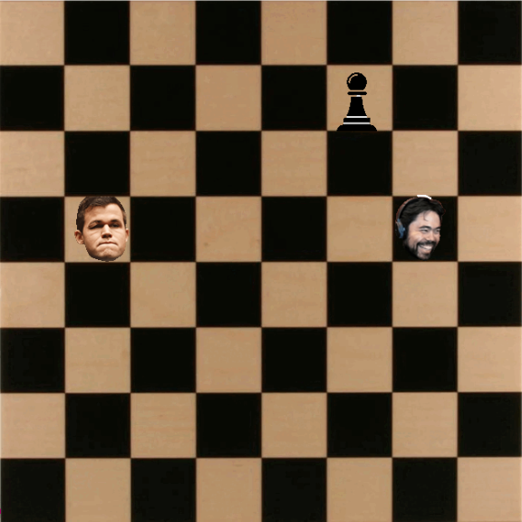

Home
Portfolio
About Me
This is my Portfolio Page!
CSP Football Project
CSP Football emulates a real-life penalty shootout in soccer. The player first sees the welcome screen, and has to press "y" to continue. Next, the player is allowed to choose a direction, left/right and up/down to shoot the ball. The Computer dives the goalie in a random direction, and depending on the outcome, your score goes up by 1 or stays the same. The same thing is done in reverse: you must save a direction to choose, and the computer kicks the ball in a random direction. The computer's score goes up by 1 or stays the same. This is repeated 5 times, like a real-life penalty shootout. You win if you score more points than the computer.
Hikaru's Journey ft. Juicers

Hkaru's Journey ft. Juicers is a snake-based game. You control Hikaru Nakamura, one of the best chess players in the world, using WASD. The objective of the game is to collect as many "juicers," or pawns, as possible while avoiding Magnus and staying inside the Chess Board. The score is displayed on the top of the game, and Hikaru's image changes based on when he is moving, eating a pawn, or dead.
Raining Good and Evil Minions
Raining Good and Evil Minions is a game where the user moves the basket using the arrow keys to catch as many good minions (+5 poitns) and avoid the bad minions (Score is halved, 1 life gone). If the user collects 200 points, the user wins. If the user runs out of the 3 lives that are initially given, the user loses. There are two power ups in this game, the expanding power up where the basket becomes longer for 10 seconds, and the lightning power up which allows the user to press space to release a bolt of thuder for 10 seconds. The thunder can zap a purple minion to make it disappear and the user gains 20 points.
Honey Bee Data Project
This is our graph of Honey Production by year, seperated by State. We found interesting trends within the data that were visualized by drawing a graph using code, using matplotlib.
Peppered Moth Simulation
We observed that pollution caused by humans can impact peppered moth color, due to natural selection. We also saw how quickly the peppered moth population respond to changes in light level. Despite each individual moth not being able to change color, natural selection was able to influence the population as a whole.
Interactive Fiction Rags to Riches.
Black Jack game written in Python.
Modified bits in pictures.
Use data files to create graphs.
Using netlogo do remix of illusions.
Interactive Fiction Rags to Riches.